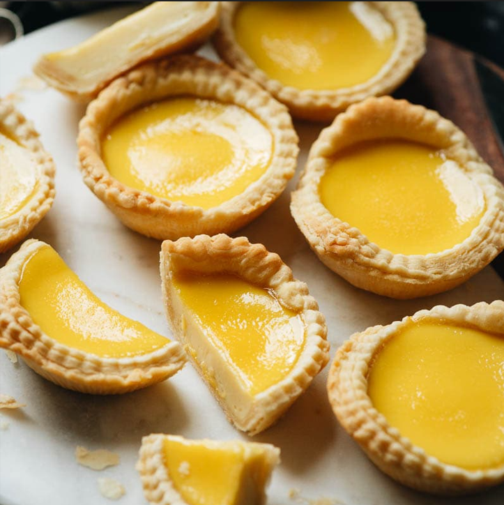

Egg Tarts

What are egg tarts?
The egg tart is a kind of custard tart found in Chinese cuisine derived
from the English custard tart and Portuguese pastel de nata. The dish
consists of an outer pastry crust filled with egg custard.
Ingredients:
- 4 eggs, beaten, reserve 2 tablespoons for your pastry dough
- ¾ cup water, hot
- 6 tablespoons sugar, and ¼ cup powdered sugar
- 2 ⅛ teaspoon salt, pinch
- ¼ cup evaporated milk
- 2 cups cake flour, plus extra for dusting
- 115 g unsalted butter, room temperature
Recipe:
-
in a large bowl, sift flour, sugar, and salt. Then add softened butter,
and mix with your hands.
-
Whisk the egg yolks and add the 2 tablespoons of beaten yolk to the
flour mixture. Bring together until smooth.
-
Cover with plastic wrap and then refrigerate for 30 minutes, or until
the dough is firm.
-
To make the custard filling, melt sugar and salt with hot water. Mix
until dissolved then let cool.
-
Add the rest of the beaten egg yolk. Stir in sugar water and also
evaporated milk, and stir everything together.
- Strain the filling to ensure no lumps. Chill in the refrigerator.
- Preheat the oven to 400˚F (200˚C.)
-
Take the dough out and divide into 16 equal portions. Spray the tart pan
with a light coating of oil.
-
Take one portion of your dough and roll it into a ball and place in your
tart shell.
-
Press the shell into the pan with your fingers. Try to make the wrapper
uniform in thickness and avoid a thick bottom. Repeat to finish all.
-
Pour the custard filling into the shells until it is about 80% full.
-
Bake for 15 to 20 minutes until the surface becomes golden brown and a
toothpick can stand in the egg tart.
-
Cool down for several minutes and then take the egg tarts out of the
pan. Serve while still warm.
- Enjoy!